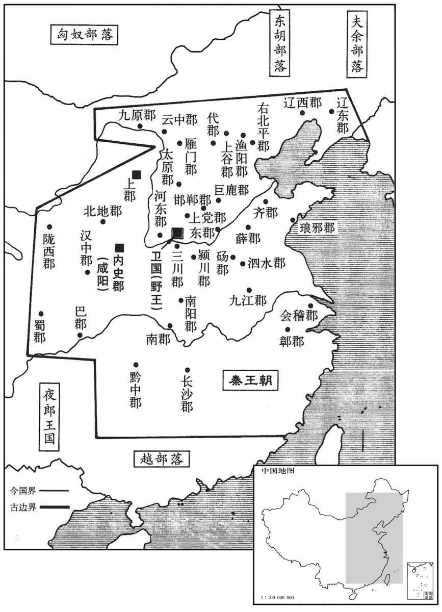

公元前221年资治通鉴：本年记事、原文与白话对照
按原书编年位置阅读；追叙和史论不等于本年发生的事件。白话采用所据译本，缺译不以生成译文补齐。
卷7 · 本年记事
公元前221年 · 始皇帝在位第26年
二十六年〔（庚辰、前二二一）〕
本年事件索引（现代整理）
王贲自燕南攻齐，猝入临淄，民莫敢格者。〔格，如字，止也，斗也。〕秦使人诱齐王，约封以五百里之地，〔诱，音酉。〕齐王遂降，秦迁之共，〔班志，河内郡有共县。史记正义曰：今卫州有共城县。共，音恭；下同。〕处之松柏之间，饿而死。〔处，昌吕翻。〕齐人怨王建不早与诸侯合从，听奸人宾客以亡其国，歌之曰：“松耶，柏耶，住建共者客耶！”疾建用客之不详也。〔索隐曰：谓不详审用宾客，不知其善否也。齐田氏亡。〕
秦将王贲率军从燕国向南进攻齐国，突然攻入都城临淄，齐国国民中没有敢于抵抗的。秦国派人诱降齐王，约定封给他五百里的土地，齐王于是便投降了。但是秦国却将他迁移到共地，安置在松柏之间，最终被饿死。齐国人埋怨君王田建不早参与诸侯国的合纵联盟，而却听信奸佞、宾客的意见，以致使国家遭到灭亡，故为此编歌谣说：“松树啊，柏树啊！使田建迁住共地饿死的，是宾客啊！”恨田建任用宾客不审慎考察。
史家评论 · 原文及其白话
臣光曰：从衡之说虽反复百端，然大要合从者，六国之利也。昔先王建万国，亲诸侯，使之朝聘以相交，飨宴以相乐，〔乐音洛。〕会盟以相结者，无他，欲其同心戮力以保家国也。向使六国能以信义相亲，则秦虽强暴，安得而亡之哉！夫三晋者，齐、楚之藩蔽；齐、楚者，三晋之根柢；〔柢，都礼翻，又丁计翻。〕形势相资，表里相依。故以三晋而攻齐、楚，自绝其根柢也，以齐、楚而攻三晋，自撤其藩蔽也。安有撤其藩蔽以媚盗。曰“盗将爱我而不攻”，岂不悖哉！
臣司马光曰：合纵、连横的学说虽然反复无常，但其中最主要的是，合纵符合六国的利益。从前，先王封立大量封国，亲近爱抚各国诸侯，使他们通过拜会、探访来增进相互交往，用酒宴招待他们以增进欢乐友好，实行会盟而增进团结联合，不为别的，就是希望他们能同心协力共保国家。假使当初六国能以信义相互亲善，那么秦国虽然强暴，六国又怎么能被它所灭亡掉呢！韩、赵、魏三国是齐、楚两国的屏障，而齐、楚两国则是韩、赵、魏三国的基础，它们形势上相依托，表里间相依赖。所以韩、赵、魏三国进攻齐、楚，是自断根基；而齐、楚两国征伐韩、赵、魏三国，则是自撤屏障。可哪里有自己拆毁屏障以讨好盗贼，还说“盗贼将会爱惜我而不攻击我”的，这难道不是荒谬得很吗？
王初并天下，自以为德兼三皇，功过五帝，〔伏羲、神农、黄帝为三皇。少昊、颛顼、高辛、唐尧、虞舜为五帝。宋均注援神契引甄耀度曰：伏羲、神农、燧人为三皇。黄帝、颛顼、帝喾、唐尧、虞舜为五帝。孔颖达曰：郑玄注中候敕省图引运斗枢：伏羲、女娲、神农为三皇。五帝者，德合五帝座星者称帝，则黄帝、金天氏、高阳氏、高辛氏、陶唐氏、有虞氏是也；实六人而称五者，以其俱合五帝座星也。白虎通取伏羲、神农、祝融为三皇。帝者，天之一名，所以名帝。帝者，谛也，言天荡然无心，忘于物我，公平通远，举事审谛，故谓之帝也。帝号同天，名所莫加，而称皇者，以皇是美大之名，言大于帝也。〕乃更号曰“皇帝，命为“制”，令为“诏”，〔师古曰：天子之言，一曰制书，二曰诏书。制书，谓其制度之命也。如淳曰：诏，告也。自秦、汉以上，唯天子得称之。更，工衡翻。〕自称曰“朕”。〔古者君臣之间通称曰朕；自秦定制，唯天子独称之。〕追尊庄襄王为太上皇。〔太上者，极尊之称也。始皇自号曰始皇帝，故追尊庄襄王为太上皇。自汉高帝以尊太公，此后不复为追号。〕制曰：“死而以行为谥，则是子议父，臣议君也，甚无谓。自今以来，除谥法。〔周公作谥法，缘行之美恶以立谥。如幽、厉之君，虽孝子、慈孙，百世不能改也。今秦除之，畏后人加己以恶谥也。谥，神志翻。〕朕为始皇帝，后世以计数，〔史记正义：数，色主翻。〕二世、三世至于万世，传之无穷。”
秦王嬴政刚刚兼并六国，统一天下，自认为兼备了三皇的德行，功业超过了五帝，于是便改称号为“皇帝”，皇帝出命称“制书”，下令称“诏书”，皇帝的自称为“朕”。追尊父亲庄襄王为太上皇。并颁布制书说：“君王死后依据他生前的行为加定谥号，这是儿子议论父亲，臣子议论君王，实在没意思。从今以后，废除为帝王上谥号的制度。朕为始皇帝，后继者以序数计算崐，称为二世皇帝、三世皇帝，以至万世，无穷尽地传下去。”
初，齐威、宣之时，邹衍论着终始五德之运；〔所谓终始五德之运者：伏羲以木德王；木生火，故神农以火德王；火生土，故黄帝以土德王；土生金，故少昊以金德王；金生水，故颛顼以水德王；水生木，故帝喾又以木德王；木又生火，故帝尧以火德王；火又生土，故帝舜以土德王；土又生金，故夏以金德王；金又生水，故商以水德王；水又生木，故周以木德王：此五德之终而复始也。邹衍以为周得火德，盖以火流王屋为周受命之符，且服色尚赤故也。就衍之说以为终始，秦当以土为行。今始皇以水胜火，自以水为行，所谓推五胜也。汉初以土为行，盖亦祖衍之说也。〕及始皇并天下，齐人奏之。始皇采用其说，以为周得火德，秦代周，从所不胜，为水德。始改年，朝贺皆自十月朔；衣服、旌旄、节旗皆尚黑；数以六为纪。〔改年句断。夏以建寅之月为岁首，殷以建丑之月为岁首，周以建子之月为岁首；今始皇以建亥之月为岁首，是改年也。自此纪年皆以十月为岁首，朝贺以十月朔。以水为行，故色尚黑。水成数六，故以六为纪。〕
当初，齐威王、齐宣王的时候，邹衍研究创立了金、木、水、火、土终而复始的“五德相运”学说。到了始皇帝合并天下时，齐国人将此说奏报给他。始皇采纳了这套学说，认为周朝是火德，秦取代周，从火不能胜水来推算，秦应是水德。于是开始下令更改岁历，新年朝见皇帝与庄贺典礼都从十月初一开始，以十月初一为元旦；衣服、旗帜、符节等都崇尚用黑色；计数以六为一个单位。
丞相绾〔【章：十二行本“绾”下有“等”字；乙十一行本同；孔本同。】〕言：“燕、齐、荆地远，〔避庄襄王讳，故以楚为荆。索隐曰：丞相绾，姓王。〕不为置王，无以镇之。请立诸子。”始皇下其议。〔下，遐嫁翻；凡自上而下之下皆同音。〕廷尉斯曰：〔班书百官表：廷尉，秦官。应劭曰：听狱必质诸朝廷，与众共之；兵狱同制，故称廷尉。师古曰：廷，平也；治狱贵平，故以为号。〕“周文武所封子弟同姓甚众，然后属疏远，相攻击如仇雠，周天子弗能禁止。今海内赖陛下神灵一统，皆为郡、县，诸子功臣以公赋税重赏赐之，甚足易制，〔易，以豉翻；史记正义音以职翻，非也。〕天下无异意，则安宁之术也。置诸侯不便。”始皇曰：“天下共苦战斗不休，以有侯王。赖宗庙，天下初定，又复立国，是树兵也；而求其宁息，岂不难哉！廷尉议是。”
丞相王绾说：“燕、齐、楚三国的故地距都城咸阳过于遥远，不在那里设置侯王，便不能镇抚。因此请分封诸位皇子为侯王。”始皇帝将这一建议交给大臣评议。廷尉李斯说：“周文王、周武王分封子弟族人非常多，他们的后代彼此疏远，相互攻击如同仇敌，周天子也无法加以制止。现在四海之内，仰仗陛下的神灵而获得统一，全国都划分为郡和县，对各位皇子及有功之臣，用国家征收的赋税重重给予赏赐，这样即可以非常容易地进行控制，使天下人对秦朝廷不怀二心，才是安定国家的方略。分封诸侯则不适宜。”始皇说：“天下人都吃尽了无休止的战争之苦，全是因为有诸侯王存在的缘故。今日依赖祖先的在天之灵，使天下初步平定，假若又重新封侯建国，便是自己招引兵事、培植战乱，似此而想求得宁静、养息，岂不是极困难的事情吗？！廷尉的主张是对的。”
分天下为三十六郡，郡置守、尉、监。〔裴骃曰：三川、河东、南阳、南郡、九江、鄣郡、会稽、颍川、砀郡、泗水、薛郡、东郡、琅邪、齐郡、上谷、渔阳、右北平、辽西、辽东、代郡、巨鹿、邯郸、上党、太原、云中、九原、雁门、上郡、陇西、北地、汉中、巴郡、蜀郡、黔中、长沙，凡三十五郡，与内史为三十六郡。班书百官表：郡守掌治其郡；郡尉掌佐守典武职、甲卒；监御史掌监郡。守，始究翻。监，去声；康又居衔切。余谓守、尉、监，官名也，当从去声；若监郡之监则从平声。记王制：天子使其大夫为三监，监于方伯之国。陆德明释文：监，古暂翻；监于，古衔翻；可以知矣。〕
始皇帝于是下令把全国划分为三十六个郡，每个郡设置郡守、郡尉、监御史。

收天下兵聚咸阳，销以为钟鐻、〔鐻与虡同，音巨。虡者所以悬钟，横曰笋，植曰虡。〕金人十二，重各千石，置宫庭〔【章：十二行本“庭”作“廷”；乙十一行本同；孔本同。】〕中。〔史记正义曰：汉书五行志：时大人见临洮，长五丈，足履六尺，皆夷狄服，凡十二人；故销兵器，铸而象之，所谓“金狄”也。〕一法度、衡、石、丈尺。徙天下豪桀于咸阳十二万户。
又下令收缴全国民间所藏的兵器，运送汇集到咸阳，熔毁后铸成大钟和钟架，以及十二个铜人，各重千石，放置在宫庭中。并统一法制和度量衡，将各地富豪十二万户迁徙到咸阳置于朝廷的监控下。
诸庙及章台、上林皆在渭南。〔上林在汉长安县西南。秦始起上林苑，至汉武帝又增而广之。〕每破诸侯，写放其宫室，作之咸阳北阪上，〔程大昌雍录曰：咸阳北阪，汉武帝别名渭城。阪，即九嵕诸山麓也。〕南临渭，自雍门以东至泾、渭，殿屋、复道、周阁相属，〔徐广曰：雍门在高陵县。史记正义曰：在今岐州雍县东。余按班志，高陵县属左冯翊，左辅都尉治焉；雍县属右扶风。二说相去何远也？三辅黄图曰：长安城西出北头第一门曰雍门，本名西城门。但长安本秦离宫，秦之咸阳则汉扶风之渭城也。渭城与长安相去虽不远，然秦时长安未有十二门也。岂作史者因汉之雍门而书之欤！泾、渭，言泾、渭之交也。复，与复同，音方目翻。复道，阁道也；上下有道，故谓之复。〕所得诸侯美人、钟鼓以充入之。
秦王朝祭祀祖先、神佛的宗庙等处所和章台宫、上林苑都设在渭水南岸。而秦国每征服一个国家，就摹画、仿照该国的宫室，在咸阳城北的山坡上同样建造一座。如此南临渭水，自雍门向东至泾水、渭水相交处，宫殿屋宇、天桥、楼阁相连接，所获得的各国美女、钟鼓等乐器都安置在里边。